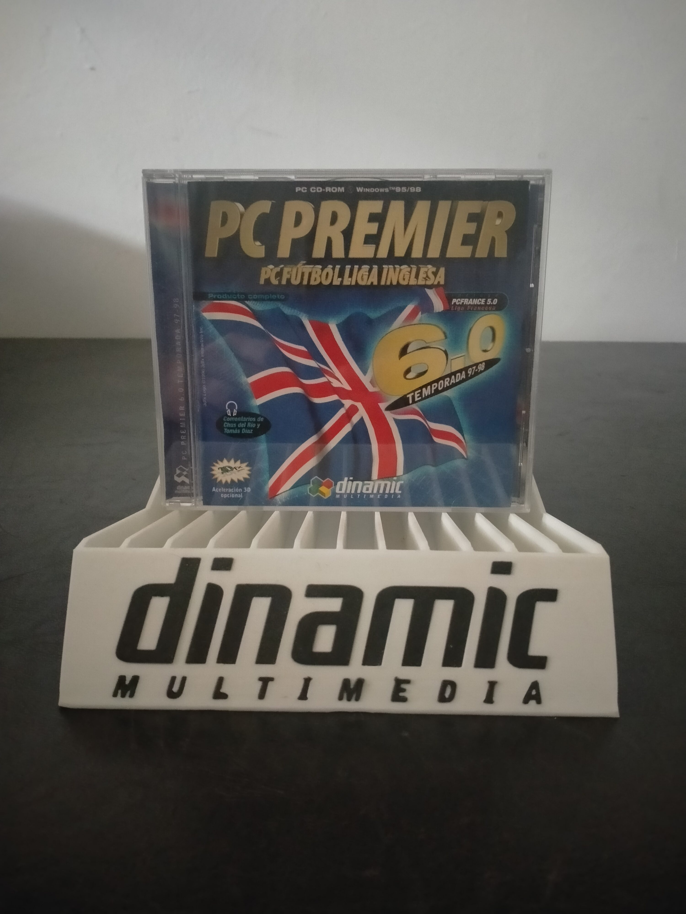

Ficha #000000
PC Premier: PC Fútbol Liga Inglesa 6.0 - Temporada 97-98
PC Premier: PC Fútbol Liga Inglesa 6.0 es una edición de la temporada 1997-98 centrada en el fútbol inglés y construida sobre la fórmula de gestión deportiva popularizada por la saga PC Fútbol de Dinamic Multimedia. Permite administrar clubes, plantillas, fichajes, alineaciones, economía y competiciones mediante una amplia base de datos, combinando la vertiente de mánager con la representación de los partidos. Esta versión para Windows 95 y Windows 98 ofrece aceleración 3D opcional y comentarios de Carlos del Río y Tomás Díaz. La edición incorpora además PC France 5.0, dedicado a la liga francesa, por lo que documenta el intento de Dinamic Multimedia de extender su modelo de simulación futbolística a otros campeonatos europeos durante la segunda mitad de los noventa.
- Formato
- Jewel Case
- Plataforma
- Win95 Win98
- Género
- Deportes Fútbol Gestión deportiva Simulación
- Serie
- Todos Jewel Case Dinamic multimedia
- Desarrollador
- Dinamic Multimedia
- Distribuidor
- Dinamic Multimedia
- EAN
- —
Contenido de la edición
- Caja jewel case
- CD-ROM
Preservación
- Protección
- No determinado
- Formato recomendado
- ISO
- Jugable en virtualización
- Sí
Preservación recomendada mediante imagen completa del CD-ROM en formato ISO y conservación de las carátulas y documentación asociada. La ejecución virtual es viable en una máquina virtual con Windows 95 o Windows 98, aunque puede requerir configurar DirectX y desactivar la aceleración 3D si el adaptador virtual no es compatible.